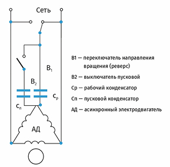
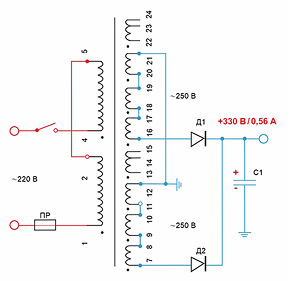

Как подключить оборудование, работающее от трехфазной сети 380 В, к однофазной питающей сети 220 В?
В этой статье рассмотрели ответ на вопрос, существуют ли преобразователи частоты с однофазным входом 220 и трехфазным выходом 380 В.
На некоторых промышленных и коммерческих объектах доступно электроснабжение только на основе однофазной системы с напряжением 220 В. Однако бывают случаи, когда для работы, к примеру, электродвигателей на предприятиях требуется трехфазное питание 380 В. И тогда встаёт вопрос: каким образом подключить оборудование в питающую сеть с большим количеством фаз и более высокой мощностью? В статье рассмотрели решение с помощью специального оборудования.
Что потребуется для решения задачи
Чтобы превратить однофазную сеть с напряжением питания 220 вольт в трехфазную сеть с напряжением питания 380 вольт, устанавливается специальное устройство — фазосдвигающий конденсатор или повышающий трехфазный трансформатор напряжения.
Почему преобразователя частоты недостаточно
Часто данную проблему хотят решить с помощью преобразователя частоты (ПЧ). Однако его применение — недостаточная мера. Чтобы понять,для чего необходим дополнительный прибор, важно знать роль ПЧ в этом процессе. Частотный преобразователь, также известный как «частотник»— это устройство, предназначенное для изменения частоты тока и амплитуды напряжения, подаваемого на электродвигатель. Основные функции частотного преобразователя включают:
- регулировку скорости вращения электродвигателя. Благодаря изменению частоты выходного тока, устройство позволяет плавно регулировать скорость вращения электродвигателя;
- экономию энергии. Оптимизация работы электродвигателя в зависимости от нагрузки позволяет снизить потребление электроэнергии;
- плавный пуск и останов. Частотник обеспечивает плавный пуск и останов электродвигателя, что уменьшает механические нагрузки и износ оборудования;
- защиту электродвигателя. ПЧ оснащены различными функциями защиты двигателя (например, от перегрузок, перегрева и других аварийных ситуаций).
Основной функцией преобразователя частоты является обеспечение плавного нарастания или снижения скорости вращения электромотора. Достигается этот результат путём изменения частоты. Повышения напряжения при этом не происходит.
Откуда взялся миф, что ПЧ может решить задачу
На китайских маркетплейсах можно встретить частотные преобразователи 220 в 380 со встроенным инвертором напряжения, способные повышать входное напряжение. Однако ведущие производители не выпускают в своих ПЧ трансформаторы, так как это увеличивает габариты и стоимость устройств, а надёжность — снижает. Подобное решение привело бы к сложностям при установке, дороговизне и сокращению срока эксплуатации.
В ассортименте «РусАвтоматизации» есть следующие виды частотников по диапазону напряжения на входе и выходе:
| Серия ПЧ INNOVERT | Вход | Выход |
|---|---|---|
| IDD mini PLUS | 1 фаза 220 вольт | 1 фаза 220 вольт |
| ISD152M21E | 1 фаза 220 вольт | 3 фазы 220 вольт |
| ITD402U43B2_0302 | 3 фазы 380 вольт | 3 фазы 380 вольт |
Подключение трехфазного двигателя к однофазной сети с помощью фазосдвигающего конденсатора

Пуск 3-фазного электродвигателя осуществляется за счёт воздействия переменного магнитного поля, созданного трехфазной электрической сетью. При использовании однофазной сети возникает недостаток магнитного сдвига. В этом случае применяются пусковой и рабочий конденсаторы для изменения фазы.
Рабочая ёмкость для накопления заряда постоянно подключена к цепи питания и необходима для создания фазового сдвига в обмотках мотора. Последний подключается последовательно с одной обмоткой и должен иметь длительный срок службы. Вместе с обмоткой двигателя конденсатор формирует резонансный контур,что приводит к возникновению в ёмкости напряжения, превышающего входное.
Если присутствует нагрузка, мешающая свободному вращению вала двигателя, необходимо подключить пусковой конденсатор. Время его работы составляет 3–5 секунд, и он соединяется параллельно с рабочим конденсатором, поскольку требуется большая ёмкость (в 2–3 раза больше рабочей). Как только двигатель достигает своей рабочей частоты, пусковой конденсатор отключается, а мотор продолжает работать за счёт фазового сдвига.
Для обеспечения надёжной работы используются конденсаторы с полипропиленовым диэлектриком и рабочим напряжением 400–500 В. Такой способ подключения трехфазного двигателя к однофазной сети с помощью фазосдвигающего конденсатора — простой и наименее затратный.
Решение задачи с помощью повышающего трансформатора

Ещё одним решением для подключения трехфазного двигателя к бытовой сети является использование трехфазного трансформатора. Он способен преобразовывать однофазный ток для устранения конфликта между количеством фаз и мощностью у инвертора и источника питания. Обмотки трансформатора соединены звездой или треугольником. Для получения трехфазного напряжения необходимо подать однофазное напряжение на две первичные обмотки, а на третью — добавить конденсатор.
Ёмкость конденсатора рассчитывается следующим образом: на каждые 100 Вт мощности требуется 7 мкФ. Однако напряжение конденсатора должно быть не менее 400 В. Следует учесть, что подключение электромотора к трансформатору может привести к снижению мощности мотора и его эффективности. Поэтому перед подключением необходимо тщательно изучить характеристики трансформатора и мотора, а также проконсультироваться с экспертами, например, с инженерами «РусАвтоматизации». Этот способ подключения используется реже, так как является более сложным.
Заключение
Преобразование однофазного напряжения 220 вольт в трехфазное 380 вольт возможно. Для этого можно использовать фазосдвигающий конденсатор и трансформатор напряжения. Возможность решения задачи с помощью частотных преобразователей — миф. ПЧ не предназначены для повышения напряжения, несмотря на наличие множества полезных функций для управления электродвигателями.
Если у вас есть вопросы или требуется дополнительная информация, не стесняйтесь обращаться к нам. С удовольствием поможем с выбором оборудования и предоставим исчерпывающие ответы. Подписывайтесь на наши соцсети, чтобы всегда быть в курсе последних новостей и предложений.


 10 минут
10 минут
 10 минут
10 минут
 10 минут
10 минут
 10 минут
10 минут
10 минут
10 минут
10 минут
10 минут